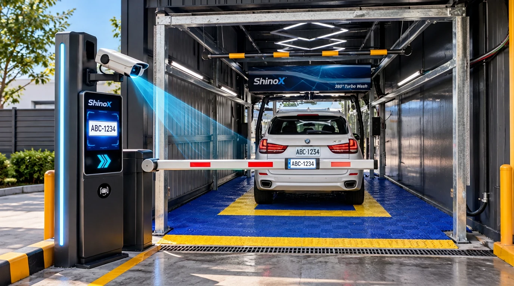
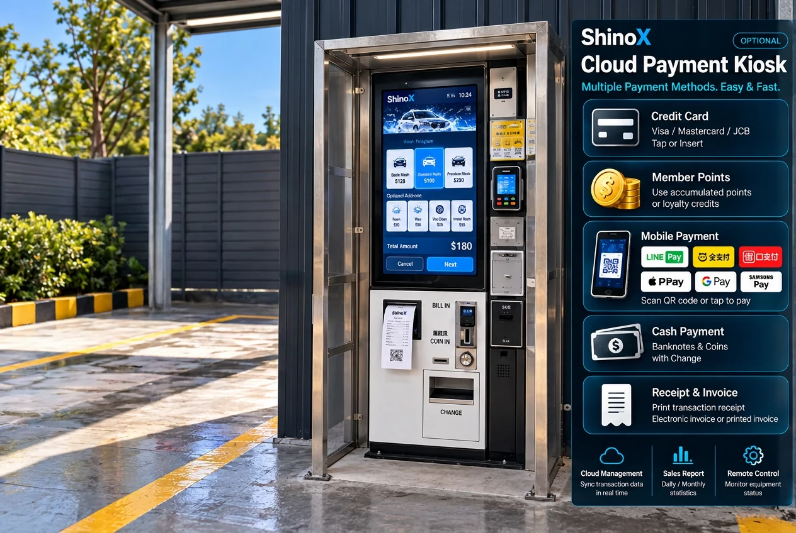

SHINOX / 技術消息
ShinoX 智慧車牌辨識 × 多元支付系統
從車輛進場、會員識別、付款到啟動洗車，ShinoX 以智慧辨識與多元金流整合，協助洗車場建立更流暢的無人化服務流程。
English ↗
01 / RECOGNITION
AI 智慧車牌辨識
讓每一台車，都擁有專屬的數位洗車身分。
透過進場車牌辨識設備，自動擷取車號並與會員系統比對，減少重複輸入與現場人工確認。經營者可依場地與營運需求，規劃車牌綁定會員、單次消費、洗車次卡及月費會員等服務模式。
- 車牌自動辨識車輛進場時辨識車號，協助快速完成身分核對；辨識效果仍取決於鏡頭、環境與車牌狀況。
- 會員資料串聯將車牌與會員帳戶連結，查詢儲值餘額、可用點數、洗車方案與使用紀錄。
- 彈性洗車方案可依需求設定單次洗車、次卡、會員優惠與月費方案，讓不同客群使用更便利。
- 數位化洗車紀錄保存辨識、付款與洗車事件，協助後台查詢、客服處理及營運分析。
02 / SMART PAYMENT
智慧多元支付
讓顧客用熟悉的方式付款，讓業者管理每一筆交易。
ShinoX 的支付整合架構可依專案配置，結合信用卡、會員點數、行動支付與實體儲值卡，讓洗車場不再受限於單一收費模式；實際可用的支付方式以金流合作及系統串接為準。
- 綁定信用卡會員可在授權的支付流程中綁定信用卡，日後依金流商規則進行付款或扣款；卡片敏感資料由合規金流服務商處理。
- 會員點數支付透過會員活動、回饋點數或既有餘額，依經營者設定的規則折抵洗車費用，增加會員回訪誘因。
- 行動支付可評估串接 LINE Pay、全支付、街口支付等服務，讓顧客以手機完成付款，並由系統接收付款確認結果。
- 實體儲值卡可透過感應或讀卡設備識別儲值卡，查詢可用餘額並完成消費紀錄，適合偏好實體卡片的顧客。
PAYMENT OPTIONS
智慧多元支付
讓顧客用熟悉的方式付款，讓業者管理每一筆交易。
綁定信用卡
會員可在授權的支付流程中綁定信用卡，日後依金流商規則進行付款或扣款；卡片敏感資料由合規金流服務商處理。
會員點數支付
透過會員活動、回饋點數或既有餘額，依經營者設定的規則折抵洗車費用，增加會員回訪誘因。
行動支付
可評估串接 LINE Pay、全支付、街口支付等服務，讓顧客以手機完成付款，並由系統接收付款確認結果。
實體儲值卡
可透過感應或讀卡設備識別儲值卡，查詢可用餘額並完成消費紀錄，適合偏好實體卡片的顧客。
可規劃整合的行動支付服務
以下為可評估的支付服務品牌，並不代表所有品牌已完成正式串接或取得合作授權。
03 / OPTIONAL PAYMENT KIOSK

選配｜觸控式雲端繳費機
針對需要現場自主付款的洗車場，ShinoX 可依營運需求選配觸控式雲端繳費機。透過直覺式觸控介面，顧客可選擇洗車方案、完成付款，並將交易資訊與後台管理系統串聯，讓無人營運也能提供完整的現場收費服務。
觸控式操作介面
透過螢幕選擇洗車方案、查看應付金額，依畫面指引完成付款。
信用卡刷卡付款
可搭配合規信用卡刷卡終端設備，提供現場刷卡付款選項。
交易收據列印
選配收據印表機，完成付款後可列印交易明細或收據。
電子發票／發票列印
依開立資格、發票系統串接及列印設備配置，支援發票開立與相關列印流程。
現金收款與找零
搭配紙鈔、硬幣接收器及找零模組，可提供現金付款與找零服務。
雲端交易紀錄
依整合方案同步交易狀態與營收資訊，方便管理者查詢與對帳。
上述功能屬依需求選配與系統整合項目，實際支援方式須依刷卡設備、收據／發票印表機、找零模組、金流與電子發票服務商及相關法規確認。
HOW IT WORKS
智慧洗車流程 5 步驟
把繁瑣的收費與身分確認流程，整合成清楚的顧客動線。
CLOUD OPERATIONS
雲端營運與會員管理
從現場設備到後台數據，讓管理更有依據。
經營者可依系統配置查看交易明細、會員消費、儲值與點數使用情形，並統整洗車次數及營收資訊。透過清楚的數據紀錄，有助於日常對帳、會員活動規劃與營運決策。
- 交易與營收紀錄
- 會員儲值、點數及優惠管理
- 洗車次數與設備使用資料
- 依專案功能提供報表查詢或匯出
本頁為 ShinoX 智慧洗車系統的功能與整合方案介紹。實際支援項目、支付品牌、信用卡綁定、自動扣款、辨識效能、設備連動及報表功能，均依選配設備、合作金流商、現場條件及專案驗收結果為準；示意圖非實際設備照片。